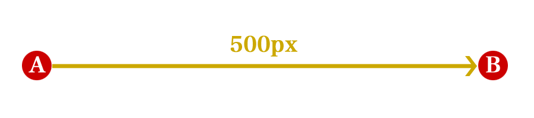

CSSによるアニメーションとイージング
2011.05.28
自己紹介
- 外村和仁（ほかむら かずひと）
- 株式会社ピクセルグリッド
- フロントエンドエンジニア
- Twitter: @hokaccha
自己紹介


今日の内容
- 1CSSによるアニメーション
- 1.1Transitions
- 1.2Animations
- 2イージング
- 2.1イージングとは？
- 2.2JavaScriptによるアニメーション
- 2.3CSSでのイージング
- 2.43次ベジェ関数について
CSSによるアニメーション
TransitionsとAnimations
- CSSでアニメーションするにはTransitionsとAnimationsの二つの手段がある
- Transitionsは時間的変化を指定してアニメーションさせる
- Animationsはキーフレームを指定してアニメーションさせる
Transitions
Transitionsの例
.demo1 {
width: 100px;
height: 100px;
background: red;
transition: width 1s; /* 実際にはprefixが必要 */
}
.demo1:hover {
width: 800px;
}対応ブラウザ

Transitionsのプロパティ
- transition-duration
- transition-property
- transition-timing-function
- transition-delay
- transition
Animations
Animationsの例
.demo2 {
width: 100px;
height: 100px;
background: red;
animation: demo2 1s infinite alternate;
}
@keyframes demo2 {
0% { width: 100px }
100% { width: 800px }
}対応ブラウザ

Animations関連のプロパティ
- animation-name
- animation-duration
- animation-timing-function
- animation-iteration-count
- animation-direction
- animation-play-state
- animation-delay
- animation
イージング
イージングとは？
- アニメーションの動き方を指定する関数のこと
- 「ずっと等速」、「最初はゆっくり、あとで高速」など
- CSSでのイージングは3次ベジェ関数というものを使うことができる
JavaScriptにおける
アニメーション
なぜJavaScriptが関係あるのか
- アニメーションとイージングの仕組みをJavaScriptで再現してみる
- FlashなどもでいいけどJavaScriptが得意なので
JavaScriptでのアニメーション
Bまで1000px">
A地点からB地点まで500pxの距離を1秒かけてアニメーションするケースを考える
CSSによるイージング
- CSSには時間や変化量を元に複雑な計算することはできない
- 代わりに3次ベジェ関数でイージングを設定できる
- というかこれしか使えない
CSSでのイージングの指定
3次ベジェ関数
transition-timing-function: cubic-bezier(n, n, n, n);※ n: 0〜1 の数値
キーワード
transition-timing-function: ease-in-out;指定可能なキーワード
| ease （デフォルト） |
cubic-bezier(0.25, 0.1, 0.25, 1.0) | 徐々に加速し、終わりに減速する |
|---|---|---|
| linear | cubic-bezier(0.0, 0.0, 1.0, 1.0) | 常に等速で移動する |
| ease-in | cubic-bezier(0.42, 0, 1.0, 1.0) | ゆっくり始まる |
| ease-out | cubic-bezier(0, 0, 0.58, 1.0) | ゆっくり終わる |
| ease-in-out | cubic-bezier(0.42, 0, 0.58, 1.0) | ゆっくり始まりゆっくり終わる |
cubic-bezierって何？

- 3次ベジェ曲線でイージングを指定する
- 4つのコントロールポイント
（P0、P1、P2、P3）で定義される - P0は0,0 P3は1,1に固定
- P1の x , y とP2の x , y を指定する
- 詳しくはWikipediaのベジェ曲線を見るべし
- 3次ベジェ曲線ジェネレーター
JavaScriptでcubic-bezierを実装する
P1x、P1y、P2x、P2yを入力値としてイージングの関数を返す関数を実装する
function cubicBezier(p1x, p1y, p2x, p2y) {
return function(x, t, b, c, d) {
// なんか小難しい処理
}
}まとめ
- CSSのアニメーションはとっても簡単
- イージングはちょっと難しい
- 3次ベジェ曲線とかしらなくてもCSSは書けます